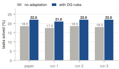
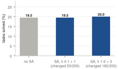
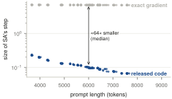
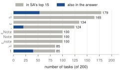

I wanted to understand Test-Time Adaptation for LLM Agents via Environment Interaction (GTTA; Chen et al., ICLR 2026) by rerunning it. It proposes two ways for an agent to adapt to a new environment. Syntactic Alignment (SA) learns a small vector δ added to the model's last hidden layer, updated with a few Adam steps on the current prompt. Dynamics Grounding (DG) lets the agent explore, turns what it saw into written rules, and adds them to the prompt.
One observation guided the rest: the logits are (H+δ)Wᵀ = HWᵀ + δWᵀ, so SA amounts to a fixed score added to every word in the vocabulary. That means I can read off exactly which words it pushes up.
24ba304), scored with BFCL's own checker.vllm/model_runner.py (a line-by-line port of the released gradient matches mine), with the same schedule: reset at each user turn, Adam steps on the whole prompt at every model call.DG works as reported. Without adaptation the agent solves 17.5–18.5% of tasks; with DG rules, 21.0–22.0% (Figure 1). Two of my runs hit the paper's numbers exactly. Identical reruns move scores by about 1 point, so the gain is bigger than the noise.

SA didn't change how many tasks were solved. At the paper's default setting, SA changed at least one generated word in 53 of 200 tasks but never changed an outcome. At the paper's best setting for this model, it changed almost every run, with 5 extra wins and 4 extra losses (+0.5 points, 95% CI −2.5 to +3.5; Figure 2).

A possible reason: the step shrinks as the prompt grows. The released code averages the gradient over the prompt twice (divide by the number of tokens, then .mean(0) over positions), which equals the exact gradient divided by the prompt length. On BFCL's 4K–8K-token prompts every coordinate ends up below Adam's ε = 10⁻⁶, so the step is about 64× smaller than Adam would normally take, and it keeps shrinking with length (Figure 3). The 1.5B model shows the same thing.

What SA pushes up. Its top words are the prompt's most frequent text: punctuation, newlines, and “Note”, because BFCL appends “Note that the provided function is in Python 3 syntax” to every function (Figure 4). Only about 8% of the top words appear in the correct answer, and SA doesn't make the correct first call more likely at either setting (e.g. −0.0027 nats per token, 95% CI −0.0077 to +0.0019, at the best setting).

SA together with DG. DG's rules make prompts 36% longer, which shrinks SA's step further (median ‖δ‖ 0.108 → 0.070). This may be one reason the paper's simple SA+DG combination (21.0%) didn't beat DG alone (22.0%).
MASK_TOKENS) was used for the reported runs?On the project site, the SA Inspector runs SA live on Qwen2.5-1.5B or 14B with either gradient, on a BFCL task or your own text, and the DG Inspector shows every DG rule and trajectory from the saved runs. Code, per-task results and a dated log of every decision are in the repository: github.com/nathyBekele/reproducing-gtta.
| DG runs | results/dg/dg-14b*/ |
| SA task success | results/sa_agent/sa-agent-14b/ |
| Step size, top words | results/summary/qwen2.5-14b-bf16*/ |
| Every decision | notes/decisions.md |